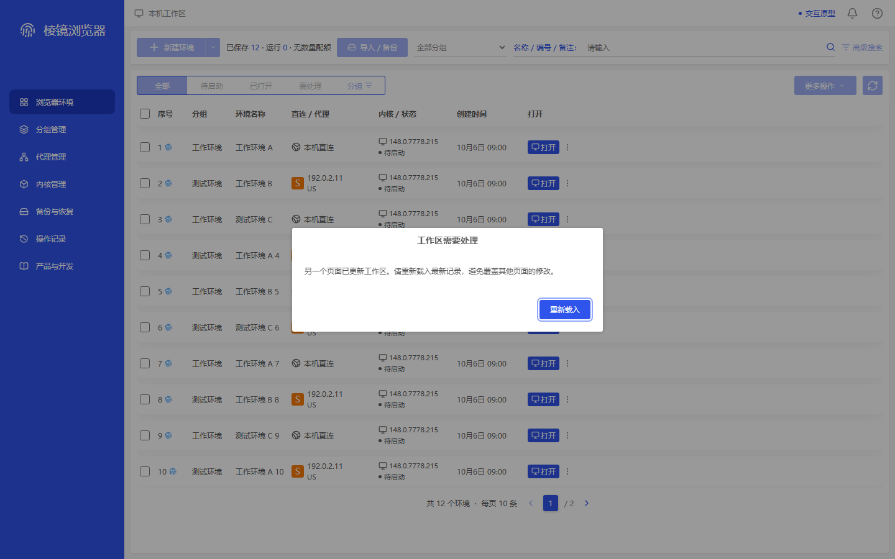
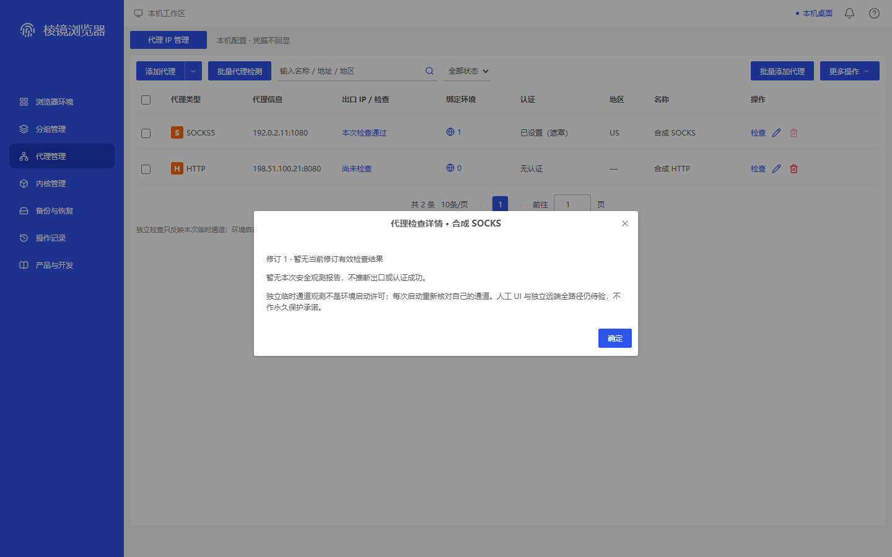
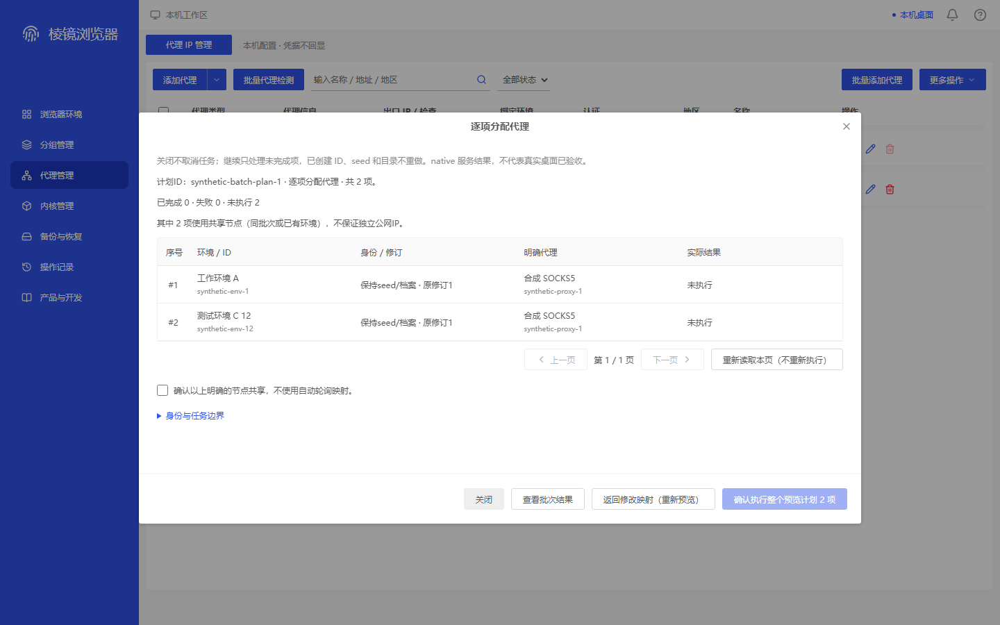
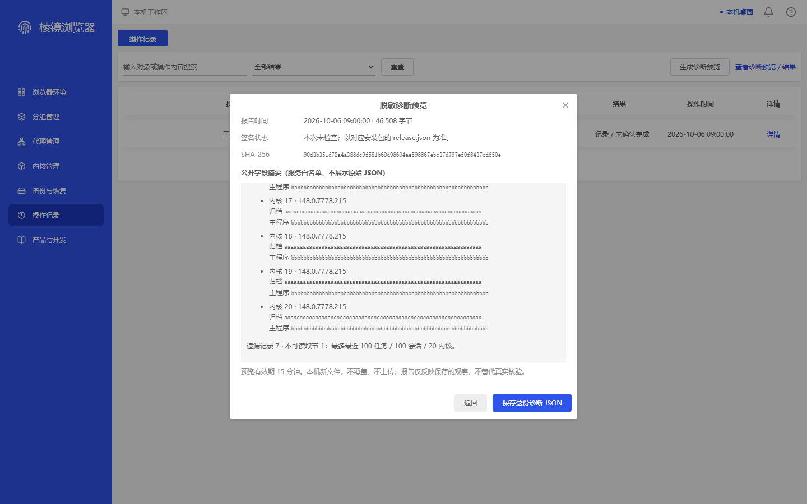
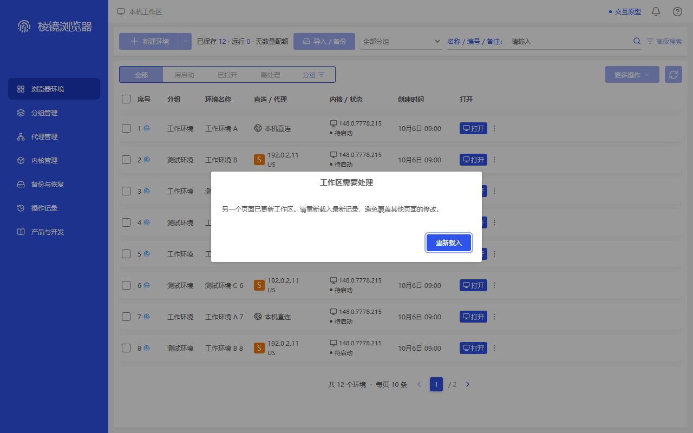
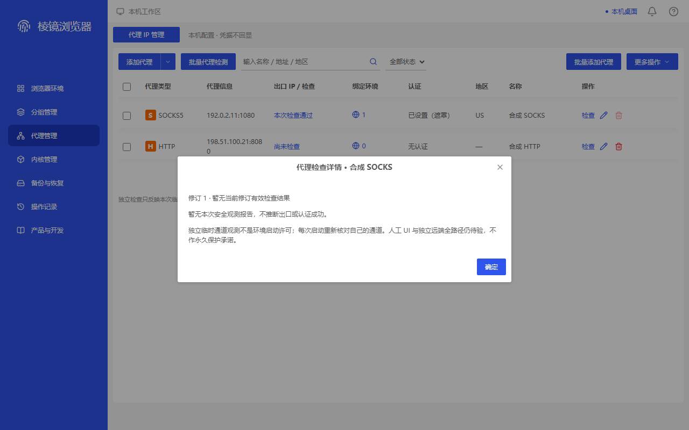
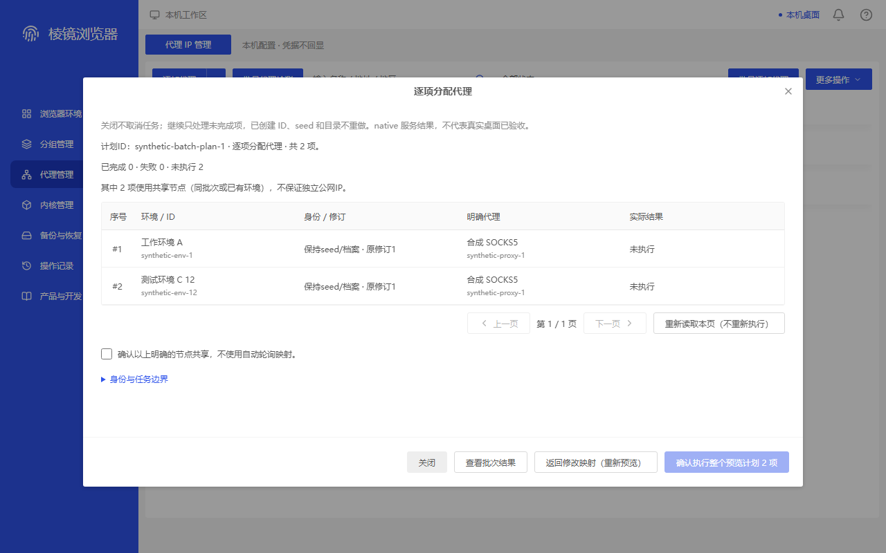
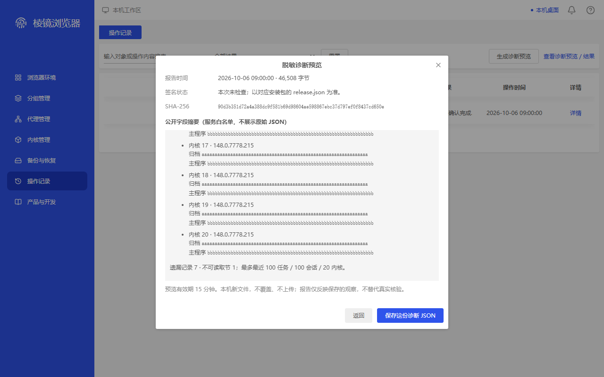

本包逐图公开合成界面、准确来源及独立结论。ADAPTED是明确适配；MAPPED是同类容器；MISSING是缺直接原参考；FAIL保留可见问题。拍图/并包完整不等于严格全产品1:1，也不证明真实桌面。旧图、旧失败和旧源码身份不倒改；修复须另看新来源。
repaired-shell-demo-conflict-primary · 1440×900
MAPPED — 完整原尺寸PNG已看；500×167工作区冲突窗(470,366.5)，标题/解释/唯一重新载入完整，白字蓝底且焦点环可见。保存guard为enabled、opacity1、rgb(47,84,235)背景/边框；reloadSubmitted=false、合成冲突记录未覆盖。原group-delete-confirm为400×151.859375删除确认，业务及尺寸不直接相同，只作容器映射。旧冲突两图FAIL不倒改。
同类参考容器：group-delete-confirm；不是同名原商业执行。

dbacdb575b4e10caa28558eeea0cf9f9f4704ff9ee8076cfedc48e4787e1f090
repaired-proxy-stale-report-details · 1440×900
MAPPED — 完整原尺寸PNG已看；620×234活动详情(410,341)，首行修订1·暂无当前修订有效检查结果，活动详情没有本次检查通过、旧203.0.113.81或旧阶段行，确定/footer完整。存储报告修订不匹配、未新增检查。变暗背景列表仍显示存储记录的本次检查通过，此保留背景投影不获当前修订成功认证；guard及旧finding限定活动详情。原proxy-edit是620×726.15625编辑表单，只作容器映射。旧stale两图FAIL不倒改。
同类参考容器：proxy-edit；不是同名原商业执行。

4e0cf8113f2ff6eb245a6f167b7c9e28c2c0dc59016ea80a2b4e54881b8fd682
repaired-native-selected-assignment-focus · 1440×900
MAPPED — 完整原尺寸PNG已看；真实batch frame(200,161.875,1040,592.25)与同视口原proxy-bound容器相同，但不是六成员绑定业务。仅synthetic-env-1与跨页synthetic-env-12两行；共享确认未勾选、执行2项禁用、分页/footer完整。保存proof为12refs/serviceUseCount30但范围仅2，Batch.Preview1/Commit0，focusInside=true且focusForcedByEvidence=false。原无焦点守卫拒绝及诊断绕守卫图不改为通过；不声称旧第17图通过。
同类参考容器：proxy-bound；不是同名原商业执行。

59438bc480b107a1d4ba45b5bb1fea6c5d4ca3c2b42dc1340867615863616b5d
corrected-local-native-diagnostic-inner-bottom · 1440×900
MAPPED — 完整原尺寸PNG已看；620×580诊断窗(410,168)，内层320/6083/5763、外层482/606/124，两个底差均0。内核20三行y538–596、遗漏7尾段y608–626都在inner/outer clips内，footer y690–748、15分钟说明及返回/保存完整。只滚动实际两容器，未改320px摘要、白名单/限制/报告或React状态；Diagnostics.Export0。100任务/100会话/20内核为保存计数，不说本底图逐项展示220行、任务100或会话100。原proxy-edit只作容器映射；旧外层到底两图仍FAIL。
同类参考容器：proxy-edit；不是同名原商业执行。

232b293aa9ed8388c488b471f80bc9f447855993a0b6b55e68b65c35ebef23bc
repaired-shell-demo-conflict-primary · 1280×800
MAPPED — 完整原尺寸PNG已看；500×167工作区冲突窗(390,316.5)，标题/解释/唯一重新载入完整，白字蓝底且焦点环可见。保存guard为enabled、opacity1、rgb(47,84,235)背景/边框；reloadSubmitted=false、合成冲突记录未覆盖。原group-delete-confirm为400×151.859375删除确认，业务及尺寸不直接相同，只作容器映射。旧冲突两图FAIL不倒改。
同类参考容器：group-delete-confirm；不是同名原商业执行。

77e44a1b80d25e6a32056b89a88e6dfef1164512cfc6095d6166c56bb7301aa4
repaired-proxy-stale-report-details · 1280×800
MAPPED — 完整原尺寸PNG已看；620×234活动详情(330,291)，首行修订1·暂无当前修订有效检查结果，活动详情没有本次检查通过、旧203.0.113.81或旧阶段行，确定/footer完整。存储报告修订不匹配、未新增检查。变暗背景列表仍显示存储记录的本次检查通过，此保留背景投影不获当前修订成功认证；guard及旧finding限定活动详情。原proxy-edit是620×726.15625编辑表单，只作容器映射。旧stale两图FAIL不倒改。
同类参考容器：proxy-edit；不是同名原商业执行。

4538f5140c80ff34d134e86d10ebf6ccf8227f318cb00134956da421a78b2256
repaired-native-selected-assignment-focus · 1280×800
MAPPED — 完整原尺寸PNG已看；真实batch frame(120,111.875,1040,592.25)与同视口原proxy-bound容器相同，但不是六成员绑定业务。仅synthetic-env-1与跨页synthetic-env-12两行；共享确认未勾选、执行2项禁用、分页/footer完整。保存proof为12refs/serviceUseCount30但范围仅2，Batch.Preview1/Commit0，focusInside=true且focusForcedByEvidence=false。原无焦点守卫拒绝及诊断绕守卫图不改为通过；不声称旧第17图通过。
同类参考容器：proxy-bound；不是同名原商业执行。

01a90e2ff7d7ee98f1da17245d59d03266c12d2ace132880bd481806799ee0ea
corrected-local-native-diagnostic-inner-bottom · 1280×800
MAPPED — 完整原尺寸PNG已看；620×580诊断窗(330,118)，内层320/6083/5763、外层482/606/124，两个底差均0。内核20三行y488–546、遗漏7尾段y558–576都在inner/outer clips内，footer y640–698、15分钟说明及返回/保存完整。只滚动实际两容器，未改320px摘要、白名单/限制/报告或React状态；Diagnostics.Export0。100任务/100会话/20内核为保存计数，不说本底图逐项展示220行、任务100或会话100。原proxy-edit只作容器映射；旧外层到底两图仍FAIL。
同类参考容器：proxy-edit；不是同名原商业执行。

b41e2f3d4545b69222efc3bc0b2f056d570b718b8ed79c36b9986194a0c565d0